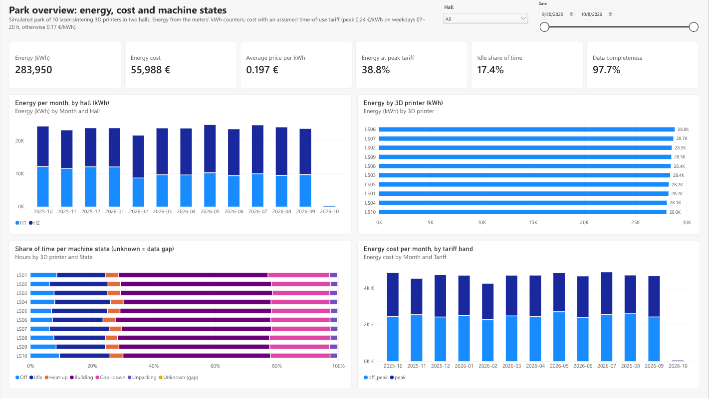

Energy monitoring for a 3D printer park, built in Microsoft Fabric
Personal portfolio project on simulated data. It rebuilds, on Microsoft Fabric, an
energy-monitoring system I built in 2019 for an internal park of 3D printers (OPC UA aggregation, InfluxDB, Grafana,
alerts on over-long heat-ups). No real machine, customer or company data is used. DP-700 (Fabric Data Engineer
Associate) is in preparation.
OPC UA (10 simulated 3D printers + meters) → edge gateway → Eventstream → Lakehouse bronze → silver → gold → Direct Lake model → Power BI
10,522 / 10,522injected duplicates removed, none lost
100 of 108heat-up overruns found, 0 false alarms
97.7 %data completeness, by 3D printer and day
64 testslocal Spark and TypeScript, against a ground truth
What I built
- Edge: OPC UA simulator and a TypeScript gateway with a SQLite store-and-forward buffer, per-meter
sequence numbers and simulated network outages (late, out-of-order, duplicate events).
- Ingestion: Eventstream custom endpoint over the Event Hubs protocol; 12 months of history (5.2M rows,
two schema versions) loaded in full and incrementally with a watermark.
- Silver: Spark Structured Streaming (
availableNow), quality rules with a quarantine table,
idempotent insert-only MERGE.
- Gold: star schema with energy from kWh counters, a time-of-use tariff in local time, build jobs,
heat-ups and an SCD type 2 machine dimension.
- BI: Direct Lake semantic model with DAX measures, a coverage grid for completeness, five report pages
stored as PBIR JSON and deployed from Git.
- Operations: daily pipeline with retries, table maintenance (OPTIMIZE, V-Order, VACUUM) and an explicit
model reframe; paid F4 capacity scripted and paused when idle (about €8 so far).
Decisions worth discussing
- Why the gateway sends live data first after an outage, and how silver copes with late data.
- Why deduplicate on (meter, measurement time) rather than on the sequence number.
- Energy from counter deltas, and plausibility rules that turned 217,000 kWh of phantom energy into 10 flagged
discontinuities.
- Why an SCD2 dimension needs its surrogate key in every relationship, and how that breaks row-level security if
you get it wrong.
- Direct Lake framing: why the model is reframed once at the end of the pipeline.
- Transformations as a tested Python package, shipped to Fabric as a wheel in an Environment.
Technology
Microsoft Fabric (Eventstream, Lakehouse, Spark notebooks, Environment, pipelines, Direct Lake,
Power BI, Git integration, REST API) · PySpark, Delta Lake · Python, pytest · TypeScript, Node.js, node-opcua,
vitest · Docker · GitHub · Azure CLI
